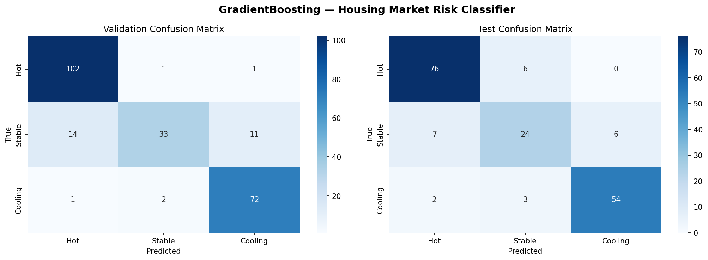
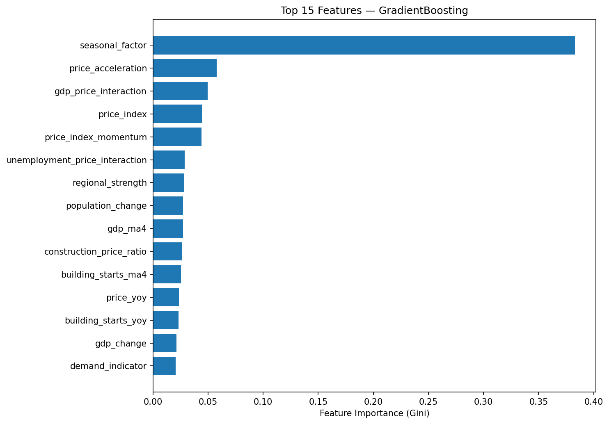

Per-class test performance:
| Class | Precision | Recall | F1 |
|---|---|---|---|
| Hot | 0.89 | 0.93 | 0.91 |
| Stable | 0.73 | 0.65 | 0.69 |
| Cooling | 0.90 | 0.92 | 0.91 |

Validation: 207/237 correct. Test: 154/178 correct. The model reliably identifies Hot and Cooling markets (F1 ≥ 0.91). Stable is the hardest class (F1 = 0.69) — most errors come from Stable markets being misclassified as Hot or Cooling.

Seasonal quarter factor dominates (0.39 Gini importance), reflecting strong seasonal patterns in Norwegian housing. Price acceleration, GDP-price interaction, price index level, and price momentum round out the top 5.
Housing market conditions are identified by analyzing the balance between supply (inventory) and demand (buyer activity):
| Metric | Hot (Seller's) | Stable (Balanced) | Cooling (Buyer's) |
|---|---|---|---|
| Price appreciation | Rapidly rising | Moderate (~3%/yr) | Slowing / declining |
| Inventory | Very low (<3 mo) | Balanced (4–6 mo) | Rising / high |
| Days on market | Very short | Average | Longer / rising |
| Price reductions | Rare | Occasional | Increasing / frequent |
| Bargaining power | Seller | Balanced | Buyer |
In this project, the labels are derived from next-quarter price index changes: HOT (>2%), STABLE (−0.5% to 2%), and COOLING (<−0.5%).
Started with a Random Forest built from scratch (no scikit-learn) to understand the fundamentals — Gini impurity, bootstrap sampling, majority voting. The initial model trained on 80 manually downloaded samples achieved 67% validation accuracy and couldn't predict Stable at all.
Built an automated SSB API pipeline that fetches 10 statistical tables programmatically, covering 2005–2024 across all 15 Norwegian counties. This expanded the dataset to 1,200 samples with 35 engineered features derived from house prices, CPI, unemployment, GDP, building permits, mortgage rates, population growth, and household income.
Compared RandomForest (balanced class weights) against GradientBoosting — Gradient Boosting won on macro-F1 and became the final model.
| Table | Feature |
|---|---|
| 03013 | Consumer Price Index |
| 10701 | Policy rate |
| 01222 | Population change |
| 07221 | House price index |
| 10187 | Property sales volume |
| 13760 | Unemployment rate |
| 03723 | Building starts |
| 10748 | Mortgage interest rates |
| 09171 | GDP volume change |
| 06944 | Household income |
Coverage: 2005–2024, 15 counties, quarterly. All fetched automatically via the SSB Statistikkbanken API.
| Algorithm | Gradient Boosting |
| Trees | 200 estimators |
| Max depth | 5 |
| Learning rate | 0.1 |
| Subsample | 0.8 |
| Features | 35 engineered |
| Data split | 65/20/15 chrono |
| Compared vs | RandomForest (balanced) |
Original from-scratch Random Forest kept as reference implementation.
15 counties, 2005–2024.